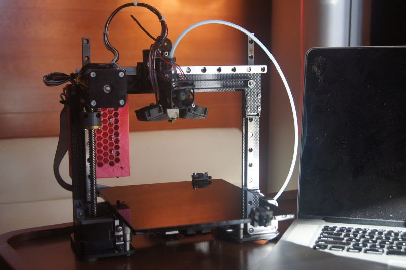
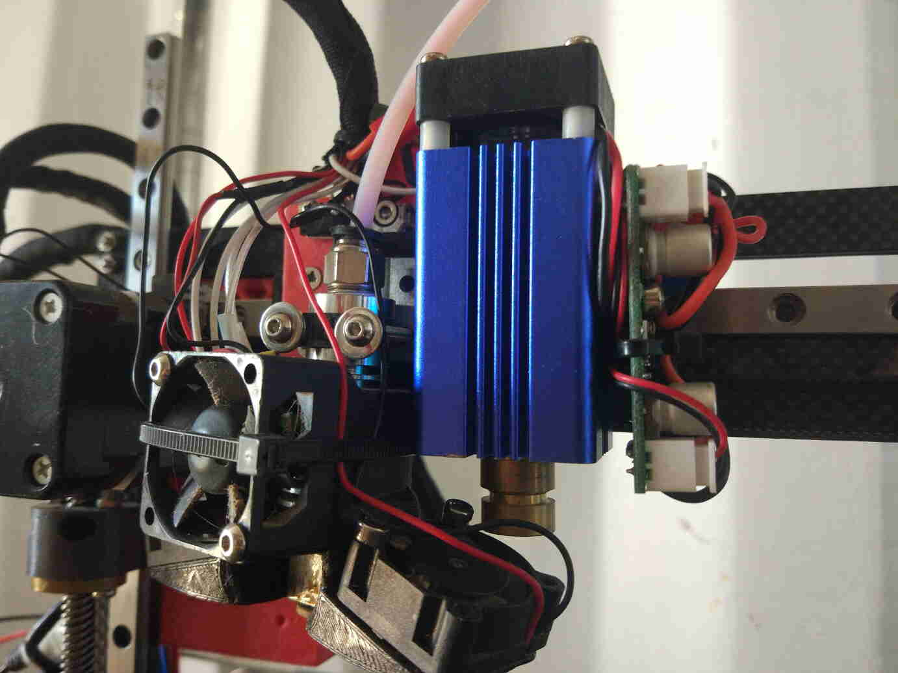

Week 04 - Computer-controlled Cutting
Assignment:
Week workflow

Tools used
- laser cutter
Software Used
- Solidworks
- Ink Scape
- Repetier host
- Sublime text 3
Introduction
On this assignment I will be using a diode laser cutter manly. I have designed and made a 3Dprinter and then I upgraded it with a 2 wats diode laser cutter. I will be testing its capabilities and testing it to its limits in orther to have a better undestand of its capabilities and limitations. I expect to be able to use the patterns created to test other machines. On the Vynil I will try to use the same machine and document its results.


Making test patterns
deciding what to test...